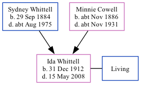

Ida Winifred Grace Judkins (née Whittell) 1912 - 2008
[ Home ] | [ Calendar ] | [ Surnames Index ] | [ Family History ]The eldest of 3 children of Sydney Whittell and Minnie Cowell (a dressmaker)Ida Whittell, the fourth cousin once-removed on the mother's side of Nigel Horne, was born in Medway, Kent, England on Dec 31, 19121,2,3. She married William J R Judkins in Medway around Aug 19384. On Sep 29, 1939, she lived at 3 Abbey Road, Gillingham, Kent, England1.
She died on May 15, 2008 in Gravesend, Kent, England3.
Parents
- Sydney George was born on Sep 29, 1884
- Minnie Gertrude was born c. Nov 1886
Citations
- 1939 Register - Findmypast (was the wife of the head of the household)
- England & Wales births 1837-2006 - Findmypast
- United Kingdom Deaths - Findmypast
- England & Wales Marriages 1837-2005 - Findmypast
Media
United Kingdom Deaths - BMD/D/MILLEN/000392181
1939 Register - TNA/R39/1726/1726H/002/26
Family Tree
Generated by ged2site. Last updated on Nov 13, 2024